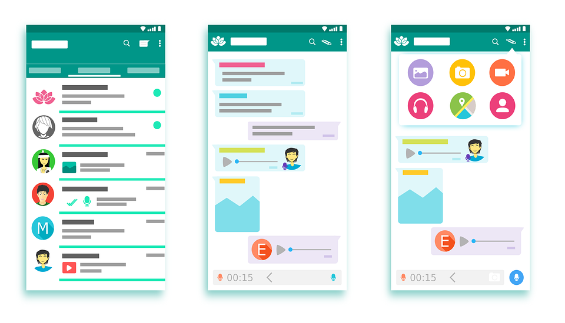
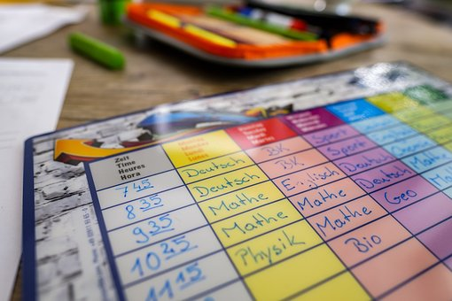

Eine Frage: Wie viel Zeit verbringst du mit Handy, Fernseher, Spielkonsole usw.? Bist du damit lange beschäftigt oder nur ein paar Minuten am Tag? Hast du daneben noch andere Hobbys, wie Sport oder Musik? Triffst du regelmäßig deine Freunde?
Dazu haben wir ein paar Ergebnisse von der Kinder-Medien-Studie herausgesucht, damit du weißt, wie das bei anderen Kindern aussieht. Am Schluss bekommst du auch noch zwei wichtige Tipps und die Möglichkeit uns zu sagen, wie du mit der Medienzeit umgehst!
Freizeit on- und offline
Kinder im Alter von 4 bis 13 Jahren spielen am liebsten zusammen mit ihren Freunden und im Freien. Auch das digitale Spielen macht Spaß, denn viele Kinder nutzen mehrmals in der Woche ihr Smartphone oder Tablet. Je älter sie werden, desto lieber werden diese Medien genutzt.
Aufwachsen mit Medien
Kuscheltiere werden von Kindern geliebt, fast alle von euch besitzen welche. Das Fahrrad ist euer ständiger Begleiter und das Sammeln von Figuren und Karten ist euch sehr wichtig, denn sie sind eure Schätze. Wenn ihr älter werdet, ab ca. 13 Jahren, ersetzen die Medien langsam das Kuscheltier oder andere Spielzeuge.
Womit teilst du dich mit?

Du nutzt jede Möglichkeit, die dir das Smartphone gibt, um dich mitzuteilen. Du chattest mit deinen Freunden über WhatsApp und andere Messenger, und auch über das Telefon. Sprachnachrichten sind beliebt, aber auch Postkarten und Briefe werden von euch noch gerne geschrieben.
Du weißt Bescheid!
Viele Kinder kennen sowohl die gute Seite des Internets als auch die schlechte. Ihr findet das Internet „cool“, weil es ist „wie ein Buch, wo alles drin steht, nur dass es eben auf einem Bildschirm ist“. Aber ihr wisst auch, dass das Internet Gefahren birgt und Zeit rauben kann, wenn der Papa oder die Mama nur noch am Handy hängen, dann findet ihr das sehr schnell „doof“ und „schlecht für die Menschen“.
Zusammengefasst
Die Kinder-Medien-Studie klingt so, als wüsstest du schon super gut über die Vorteile und Nachteile der Medien Bescheid. Die Ergebnisse sagen aus, dass du weißt, wie du ein gutes Gleichgewicht zwischen „online“ und „offline“ herstellst. Das finden wir spitze! Vielleicht kannst du in einigen Bereichen noch etwas dazu lernen, deshalb haben wir hier zwei besonders wichtige Tipps für dich:
Tipp 1

Nutz‘ die Medien erst nach den Hausaufgaben, dann kannst du dich besser auf die Hausis konzentrieren und dich danach voll und ganz auf dein Spiel, deine Serie oder deinen Film einlassen. Wir finden vor allem Medienangebote gut, die du zusammen mit deinen Freunden nutzen kannst, so hast du noch viel mehr Spaß daran.
Tipp 2
Wenn du Medien nutzt, dann prüfe sie: Nutze am besten nur die Angebote, von denen du weißt, dass sie für Kinder gemacht wurden. Manchmal ist es auch wichtig, dass deine Eltern vorher nachsehen, ob der Inhalt überhaupt für dich geeignet ist, damit du nichts sehen musst, das du eigentlich gar nicht sehen möchtest.
Möchtest du uns nun deine eigene Meinung mitteilen? Dann geh doch zur Umfrage „Online oder Offline“ in der Rubrik „Spiel und Quiz“. Wir sind gespannt auf deine Antworten! Wir wünschen dir weiterhin viel Spaß im Umgang mit Medien! Die KABU-Redaktion :)